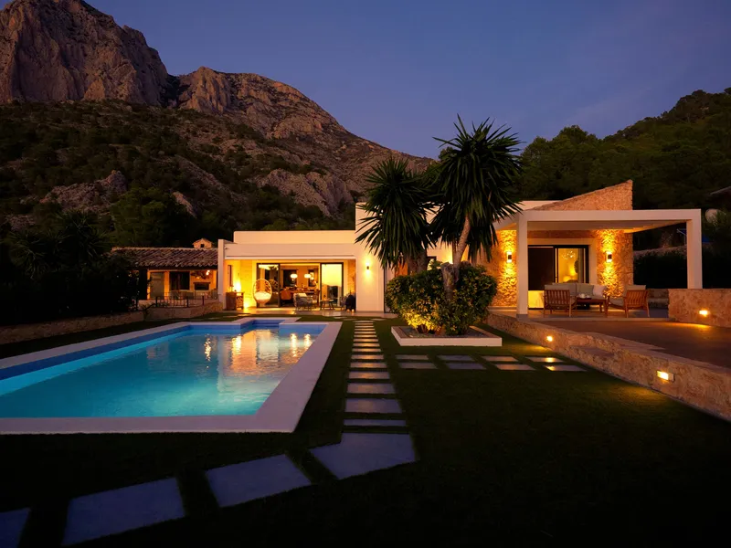
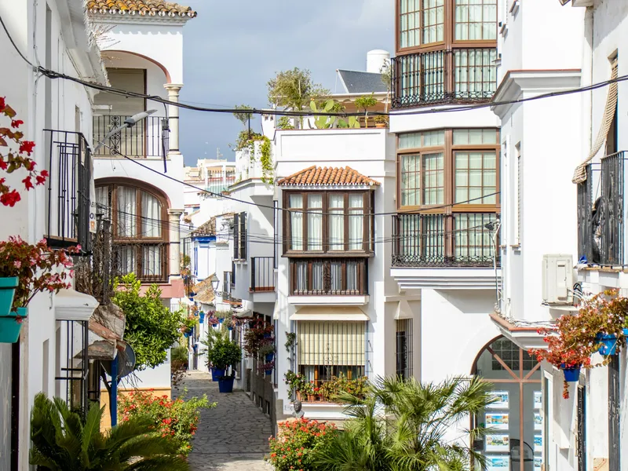
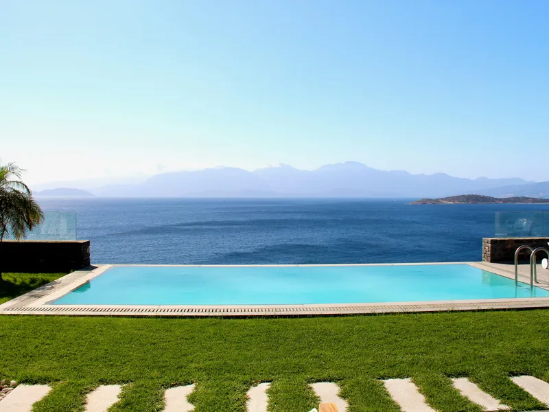
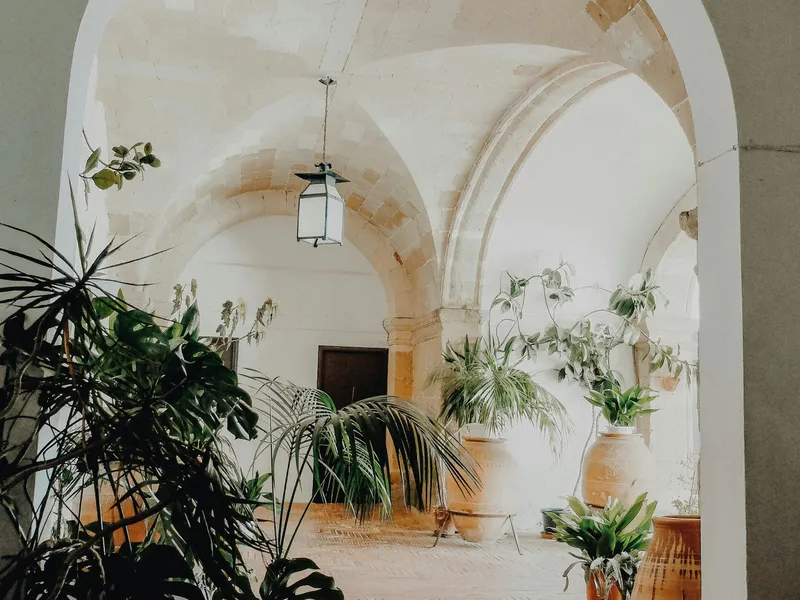
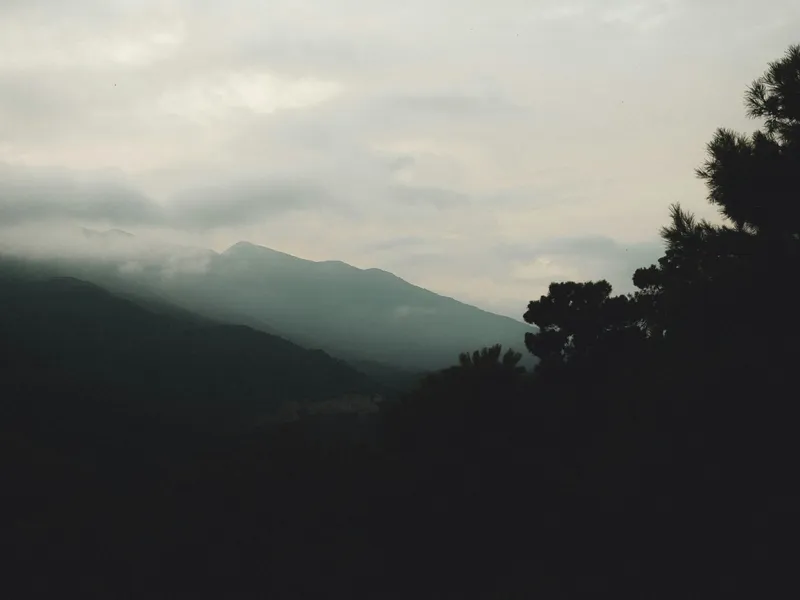
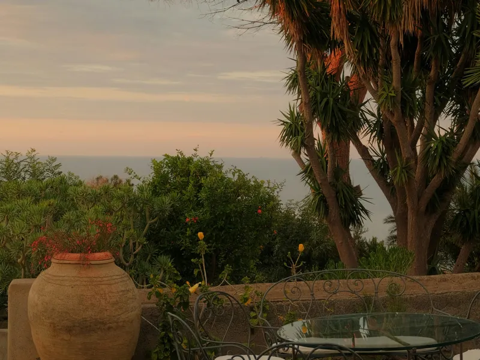

COMPRA
Notas de campo de Paula y su red: cambios de mercado, guías de compra y las historias de estilo de vida más pausadas que dan sentido a los números.
Un breve análisis de cómo están evolucionando los submercados más activos de la Costa del Sol esta temporada, y lo que los compradores internacionales están haciendo discretamente mal.
Leer el artículo →




